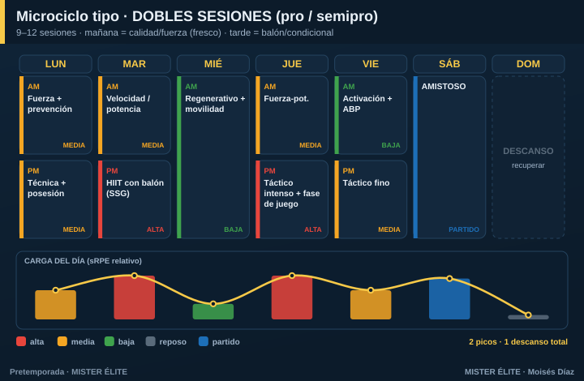

Plan · DOBLES SESIONES (profesional / semipro)
Para quién: equipos profesionales, semipro o en concentración, con 9-12 sesiones por semana (mañana y tarde). Pretemporada: 4-6 semanas.
Principio rector: aquí sobra tiempo para separar capacidades y tratarlas en su pureza. El reto no es la falta de tiempo, es gestionar la fatiga acumulada. Densidad media por sesión, nunca máxima. La integración es útil pero no obligatoria.
Microciclo tipo

La lógica mañana / tarde: - Mañana = calidad (jugador fresco): fuerza de gimnasio, prevención, velocidad y aceleraciones, técnica analítica. - Tarde = acumulación: juegos reducidos, fases de juego, HIIT con balón, resistencia específica.
Esto respeta el orden concurrente (la potencia con el jugador fresco; la resistencia después) y reparte la carga del día en dos dosis digestibles.
Cómo se reparte la carga
- Dos picos a la semana (martes y jueves), separados por el miércoles de descarga. Nunca dos días altos de la misma capacidad sin 48 h.
- No encadenes dobles a diario. Patrón sano: doble-doble-simple/descarga-doble-doble-simple-descanso. Mínimo 1 día de descanso completo por semana.
- La gran trampa de las dobles es la fatiga acumulada: vigila el wellness matinal a rajatabla. Una caída del 15-20 % en un jugador = ajustar su carga ese día.
Fuerza, velocidad y prevención
- Fuerza de gimnasio 2-3 días/semana, por la mañana.
- Prevención (Nordic, core, tobillo) casi a diario en dosis cortas.
- Velocidad 1-2 días, siempre en estado fresco (mañana).
Amistosos
Desde la semana 1-2, frecuencia creciente (1/sem → hasta 2/sem al final). 36-48 h de descarga previa. Minutos progresivos.
Trabajo individual
Los no-titulares y readaptados necesitan compensación de alta intensidad y velocidad para no descolgarse de los titulares (que acumulan minutos en los amistosos). Sesiones de compensación los días de partido.
Progresión por fases (6 semanas tipo)
| Semana | Fase | Énfasis físico | Énfasis táctico | Amistosos |
|---|---|---|---|---|
| 1 | Acumulación | Base aeróbica (gran formato), fuerza general | Principios, estructura | — / 1 suave |
| 2 | Acumulación | Base + primer HIIT, prevención | Subprincipios, posesión | 1 |
| 3 | Transformación | HIIT, inicio RSA | Fases de juego, ABP | 1-2 |
| 4 | Transformación | RSA, velocidad, fuerza-potencia | Automatismos, plan de partido | 2 |
| 5 | Realización | Velocidad/potencia, mantener motor | Once tipo, ritmo de competición | 1-2 fuerte |
| 6 | Realización | Tapering −40/60 % volumen | Afinar, plan de debut | Debut |
Recuerda: la forma de la semana (2 picos + descargas) se mantiene; lo que cambia es el contenido y, en la semana 6, el volumen baja para llegar fresco.